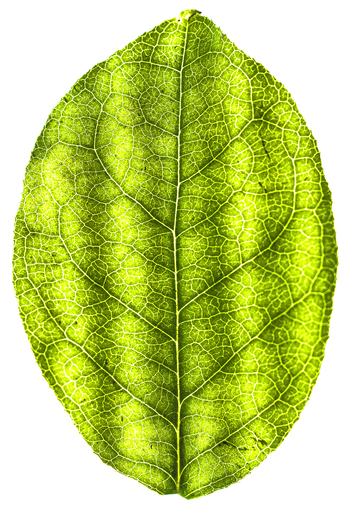

A leaf is an organ of a vascular plant and is the principal lateral appendage of the stem.[1] The leaves and stem together form the shoot.[2] Leaves are collectively referred to as foliage, as in "autumn foliage".
A leaf is a dorsiventrally flattened organ, usually borne above ground and specialized for photosynthesis. In most leaves, the primary photosynthetic tissue, the palisade mesophyll, is located on the upper side of the blade or lamina of the leaf[1] but in some species, including the mature foliage of Eucalyptus,[5] palisade mesophyll is present on both sides and the leaves are said to be isobilateral. Most leaves have distinct upper surface (adaxial) and lower surface (abaxial) that differ in color, hairiness, the number of stomata (pores that intake and output gases), the amount and structure of epicuticular wax and other features. Leaves are mostly green in color. This is due to the presence of a compound called chlorophyll. This compound is essential for photosynthesis as it absorbs light energy from the sun. A leaf with white patches or edges is called a variegated leaf.
Leaves can have many different shapes, sizes, and textures. The broad, flat leaves with complex venation of flowering plants are known as megaphylls and the species that bear them, the majority, as broad-leaved or megaphyllous plants. In the clubmosses, with different evolutionary origins, the leaves are simple (with only a single vein) and are known as microphylls.[6] Some leaves, such as bulb scales, are not above ground. In many aquatic species, the leaves are submerged in water. Succulent plants often have thick juicy leaves, but some leaves are without major photosynthetic function and may be dead at maturity, as in some cataphylls and spines. Furthermore, several kinds of leaf-like structures found in vascular plants are not totally homologous with them. Examples include flattened plant stems called phylloclades and cladodes, and flattened leaf stems called phyllodes which differ from leaves both in their structure and origin.[4][7] Some structures of non-vascular plants look and function much like leaves. Examples include the phyllids of mosses and liverworts.